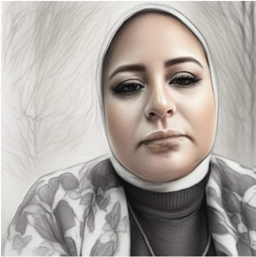

درس
لعبة
مع الأستاذة دَالْيَا السَّايِح
الصَّفُّ الأَوَّلُ الإِعْدَادِيُّ - الْوَحْدَةُ الثَّالِثَةُ - الدَّرْسُ الثَّانِي: نُظُمُ الحَشَائِشِ (الحَارَّةِ وَالمُعْتَدِلَةِ) وَالصَّحَارِي الحَارَّةُ فِي إِفْرِيقِيَا
الدِّرَاسَاتُ الاجْتِمَاعِيَّةُ
رجوع
عنوان اللعبة
1 / 25
إجابة صحيحة!